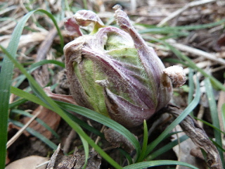
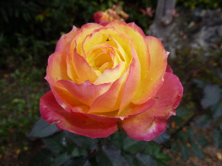
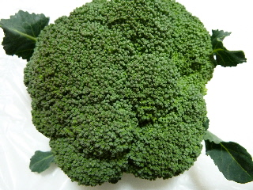
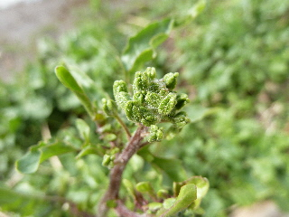
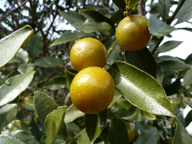
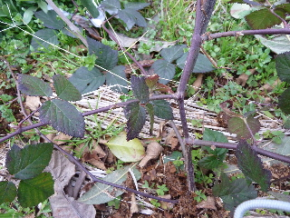

ふきのとうの季節になりました。
2013/02/03
2月になったので、ふきのとうが出ていました。

苦いですよね。
季節のものなので、我慢して食べます。
2013/02/03
2月になったので、ふきのとうが出ていました。

苦いですよね。
季節のものなので、我慢して食べます。
2013/02/03
梅ってもう咲く時期でしたっけ？
梅の実が出来る普通の梅がもう咲いていました。
一部ですけど、綺麗でした。
2013/02/03
気が付くと咲いてる四季咲きのバラです。

なんて名前かわからないですけど、このバラはしょっちゅう咲いてる気がする。
あんまり好きな色じゃないって昔思っていたんですけど、このごろはこれもいいなって思うようになってきました。
大事にしたいですね。
2013/02/03
ちょっと小さめですが収穫しました。

実がぎっしりしまっています。
美味しそうです。
2013/02/09
畑にいると、春がそこまで来てる感じがしますね。

ルッコラ（ロケット）に蕾が出来てました。
花が咲くとそっちに栄養がいっちゃうそうなので、つみとっちゃいますけど。
2013/02/17
我が家の金柑が黄色くなってきました。

食べてみたら美味しかったです。
これからちょいちょいつまみ食いをしようと思います。
畑仕事の合間とかに、パクっと食べるのが一番美味しい気がする。
2013/02/24
そろそろ枝を誘引しないとって思って見たら新しい葉っぱが出てました。

去年買ったブラックベリーなので、今年初めての誘引です。
1年でとっても大きくなったんですが、2年目はどこまで大きくなるのなか？
沢山の収穫を期待しています。
株も増やしたいな。
畑仕事じゃないよ。